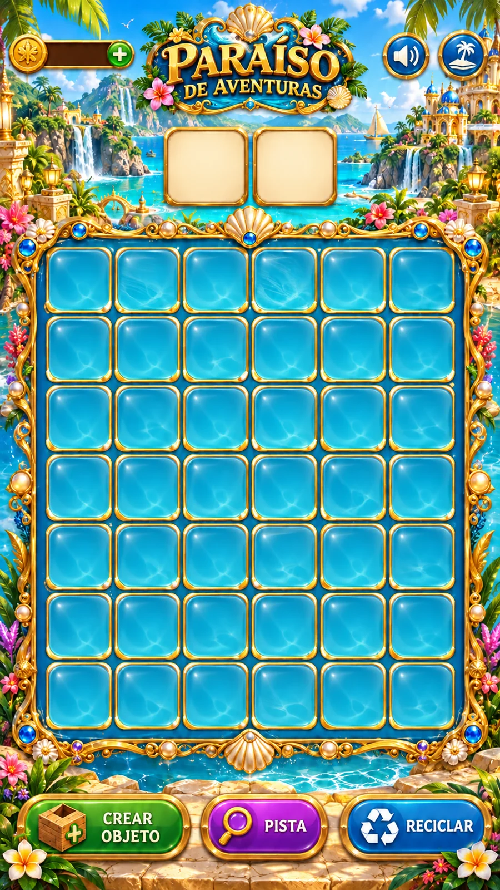

Aventura y construcción · Android
El Paraíso Perdido
Dos supervivientes llegan a una isla desconocida tras un naufragio. Reúne recursos, gana cofres, construye su primer hogar y transforma poco a poco el paisaje.
100 expediciones · 5 capítulos · Gratis y sin anuncios
Primera edición pública · Versión técnica 0.9.4 · Solo Android
Descarga para Android
Comprobando si ya está disponible el APK oficial firmado en GitHub Releases.
Consultando descargas en GitHub Releases…
Descargar APK oficial (121 MB)La descarga solo se habilita cuando GitHub confirma que el APK se ha publicado. Android puede solicitar permiso para instalar aplicaciones desde el navegador.
Así se juega
Supera expediciones
Une cadenas de al menos tres materiales iguales para cumplir los objetivos antes de agotar los movimientos.
Consigue cofres
Gana un cofre por cada nivel. Completa los 20 niveles de un capítulo para recibir materiales en el almacén.
Construye la isla
Levanta el refugio, mejora la vivienda y descubre nuevos caminos, el puente, el mirador y las cascadas.
Imágenes del juego

Instalación y actualizaciones
Descarga el APK, ábrelo en Android y confirma la instalación. Las próximas actualizaciones se anunciarán dentro del juego mediante «Buscar actualizaciones», y utilizarán la misma firma de publicación.
Si tienes una versión antigua de pruebas, firmada con una clave diferente, Android no permitirá instalar esta publicación encima. Desinstalar una versión anterior puede borrar su progreso local.
Integridad del APK validado:
SHA-256: 97cfafe0f42a548fbf220973a79df0df5ea9b36786ac76b7c51a3d648b318f6e